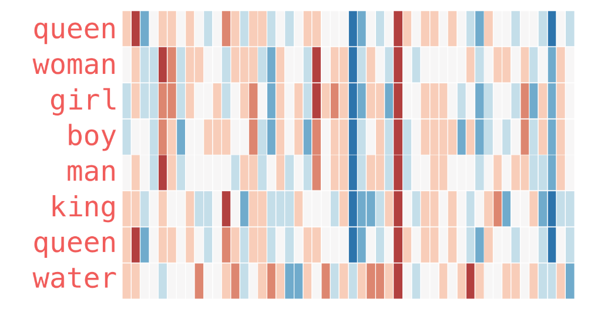
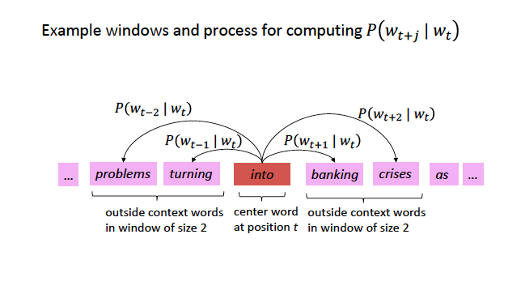
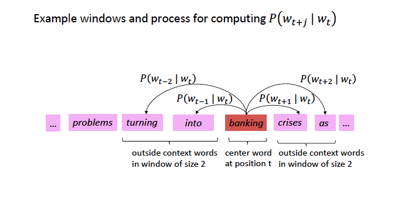
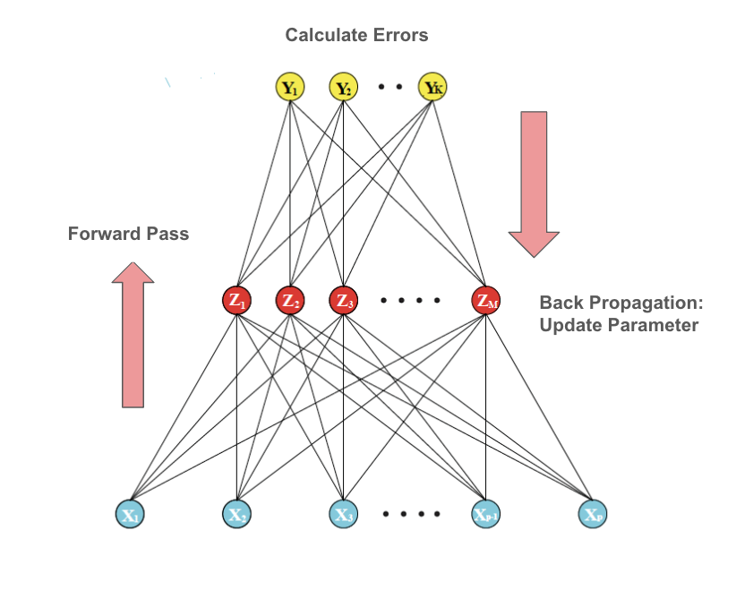
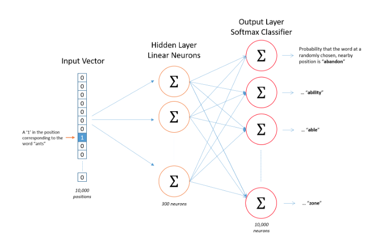
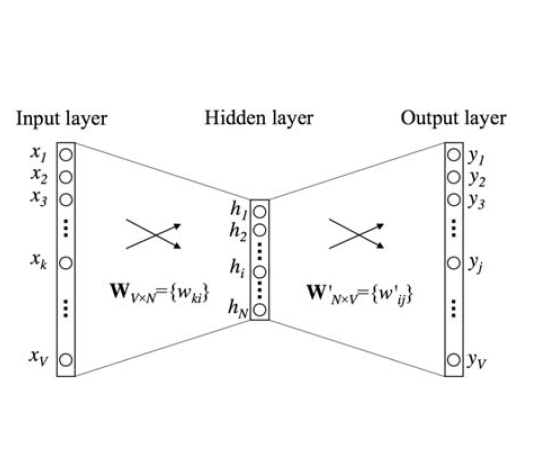
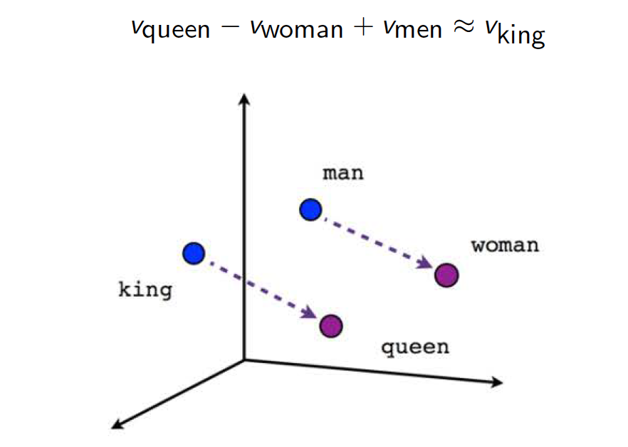

PPOL 6801 - Text as Data - Computational Linguistics
Week 7: Word Embeddings: Theory
Survey Responses
Thank you so much for responding to the survey! Here are the most important feedback I receive:
more structured walk throughs of the code
If you could a few resources we can look at for mathematical depth for class topic. Really enjoyed the in-depth discussion on LDA
I hope we can have a few discussion questions along with weekly readings
Including discussion of papers that are from non-polisci applications? For example, econ, sociology, psychology, etc.?
Stop Doing:
long alone time with code
Sometimes we spend a bit too long on the recap part
Plans for Today:
Live coding from last class on topic models
Word Embeddings
Semantics, Distributional Hypothesis, From Sparse to Dense Vectors
Word2Vec Algorithm
Mathematical Model
Estimate with Neural Networks
Next week:
Start with coding to work with wordembeddings
- Estimate from co-occurence matrices
- Working with pre-trained models
Discuss applications to social science
Coding!
Word Embeddings
Vector Space Model
In the vector space model, we learned:
A document \(D_i\) is represented as a collection of features \(W\) (words, tokens, n-grams..)
Each feature \(w_i\) can be place in a real line, then a document \(D_i\) is a point in a \(W\) dimensional space.
Embedded in this model, there is the idea we represent words as a one-hot encoding.
- “cat”: [0,0, 0, 0, 0, 0, 1, 0, ….., V] , on a V dimensional vector
- “dog”: [0,0, 0, 0, 0, 0, 0, 1, …., V], on a V dimensional vector
What these vectors look like?
really sparse
vectors are orthogonal
no natural notion of similarity
How can we embed some notion of meaning in the way we represent words?
Distributional Semantics
“you shall know a word by the company it keeps.” J. R. Firth 1957
Distributional semantics: words that are used in the same contexts tend to be similar in their meaning.
How can we use this insight to build a word representation?
Move from sparse representation to dense representation
Represent words as vectors of numbers with high number of dimensions
Each feature on this vectors embeds some information from the word (gender? noun? sentiment? stance?)
Learn this representation from the unlabeled data.
Sparse vs Dense Vectors
One-hot encoding / Sparse Representation:
cat = \(\begin{bmatrix} 0,0, 0, 0, 0, 0, 1, 0, 0 \end{bmatrix}\)
dog = \(\begin{bmatrix} 0,0, 0, 0, 0, 1, 0, 0, 0 \end{bmatrix}\)
Word Embedding / Dense Representation:
cat = \(\begin{bmatrix} 0.25, -0.75, 0.90, 0.12, -0.50, 0.33, 0.66, -0.88, 0.10, -0.45 \end{bmatrix}\)
dog = \(\begin{bmatrix} 0.25, 1.75, 0.90, 0.12, -0.50, 0.33, 0.66, -0.88, 0.10, -0.45 \end{bmatrix}\)
With colors and real word vectors
Source: Illustrated Word2Vec
Why Word Embeddings?
Encoding similarity: vectors are not ortogonal anymore!
Automatic Generalization: learn about one word allow us to automatically learn about related words
Encodes Meaning: by learning the context, I can learn what a word means.
As a consequence:
Word Embeddings improves several NLP/Text-as-Data Tasks.
Allows to deal with unseen words.
Form the core idea of state-of-the-art models, such as LLMs.
Estimating Word Embeddings
Approches:
- Count-based methods: look at how often words co-occur with neighbors.
- use this matrix, and some some factorization to retrieve vectors for the words
- GloVE
- fast, not computationally intensive, but not the best representation
- we will see code doing this next week
- Predictive Methods: rely on the idea of self-supervision
- use unlabeled data and use words to predict sequence
- the famous word2vec.
- Skipgram: predicts context words
- Continuous Bag of Words: predict center word
Word2Vec: a framework for learning word vectors (Mikolov et al. 2013)
Core Idea:
We have a large corpus (“body”) of text: a long list of words
Every word in a fixed vocabulary is represented by a vector
Go through each position t in the text, which has a center word \(c\) and context (“outside”) words \(t\)
Use the similarity of the word vectors for \(c\) and \(t\) to calculate the probability of o given c (or vice versa)
Keep adjusting the word vectors to maximize this probability
- Neural Network + Gradient Descent
Skigram Example: Self-Supervision

Source: CS224N
Skigram Example: Self-Supervision

Source: CS224N
Encoding Similarity
To estimate the model, we first need to formalize the probability function we want to estimate.
This is similar to a logistic regression
- In logistic regression: probability of a event occur given data X and parameters \(\beta\).:
$ P(y=1| X, ) = X * \(\beta\) $
\(X*\beta\) is not a proper probability function, so we make it to proper probability by using a logit transformation.
\(P(y=1|X, \beta ) = \frac{exp(XB)}{1 + exp(XB)}\)
Throw this transformation inside of a bernouilli distribution, get the likelihood function, and find the parameters using MLE.
Pametrizing \(P(w_t|w_{t-1})\)
- \(P(w_t|w_{t-1})\) must be condition on how similar these words are.
- Exactly the same intuition behind placing documents in the vector space model.
- Now words are vectors!
- \(P(w_t|w_{t-1}) = u_c \cdot u_t\)
- \(u_c \cdot u_t\)
- dot product between vectors
- measures similarity using vector projection
- \(u_c\): center vector
- \(u_t\): target vectors
- \(u_c \cdot u_t\) is also not a proper probability distribution: Logit on them!
\[P(w_t|w_{t-1}) = \frac{exp(u_c \cdot u_t)}{{\sum_{w}^V exp(u_c*u_w)}}\]
Softmax Transformation
\[P(w_t|w_{t-1}) = \frac{exp(u_c \cdot u_t)}{{\sum_{w}^V exp(u_c*u_w)}}\]
Dot product compares similarity between vectors
numerator: center vs target vectors
exponentiation makes everything positive
Denominator: normalize over entire vocabulary to give probability distribution
What is the meaning of softmax?
max: assign high values to be 1
soft: still assigns some probability to smaller values
generalization of the logit ~ multinomial logistic function.
Word2Vec: Objective Function
For each position \(t\), predict context words within a window of fixed size \(m\), given center word \(w\).
Likelihood Function
\[ L(\theta) = \prod_{t=1}^{T} \prod_{\substack{-m<= j<=m \\ j \neq 0}}^{m} P(w_{t+j} | w_t; \theta) \]
Assuming independence, this means you multiplying the probability of every target for every center word in your dictionary.
This likelihood function will change if you do skipgram with negative sampling (See SLP chapter 6)
Objective Function: Negative log likelihood
\[J(\theta) = - \frac{1}{T}log(L(\theta))\]
better to take the gradient with sums
the average increases the numerical stability of the gradient.
Neural Networks: Brief overview

Skipgram Architecture

Check your matrices

Practice with a vocabulary of size 5, a embedding with 3 dimensions, and the task is to predict the next word.
Step 1: v_1^5 * W_5^3
Step 2: w_1^3 * C_3^5
Step 3: Softmax entire vector
Word Embeddings Matrices

Applications:
Once we’ve optimized, we can extract the word specific vectors from W as embedding vectors. These real valued vectors can be used for analogies and related tasks

We will see several applications next week. Most important:
Alternative to bag-of-words feature representation in supervised learning tasks
Support for other automated text analysis tasks: expand dictionaries
Understanding word meaning: variation over time, bias, variation by groups
as a scaling method (in two weeks)
Training Embeddings
Embeddings need quite a lot of text to train: e.g. want to disambiguate meanings from contexts. You can download pre-trained, or get the code and train locally
Word2Vec is trained on the Google News dataset (∼ 100B words, 2013)
GloVe are trained on different things: Wikipedia (2014) + Gigaword (6B words), Common Crawl, Twitter. And uses a co-occurence matrix instead of Neural Networks
fastext from facebook
Decisions on embeddings, Rodriguez and Spirling, 2022
When using/training embeddings, we face four key decisions:
Window size
Number of dimensions for the embedding matrix
Pre-trained versus locally fit variants
Which algorithm to use?
Findings

popular, easily available pretrained embeddings perform at a level close to—or surpassing—both human coders andmore complicated locally fit models.
GloVe pretrained word embeddings achieve on average—for the set of political queries—80% of human performance and are generally preferred to locally trained embeddings
Larger window size and embeddings are often preferred.